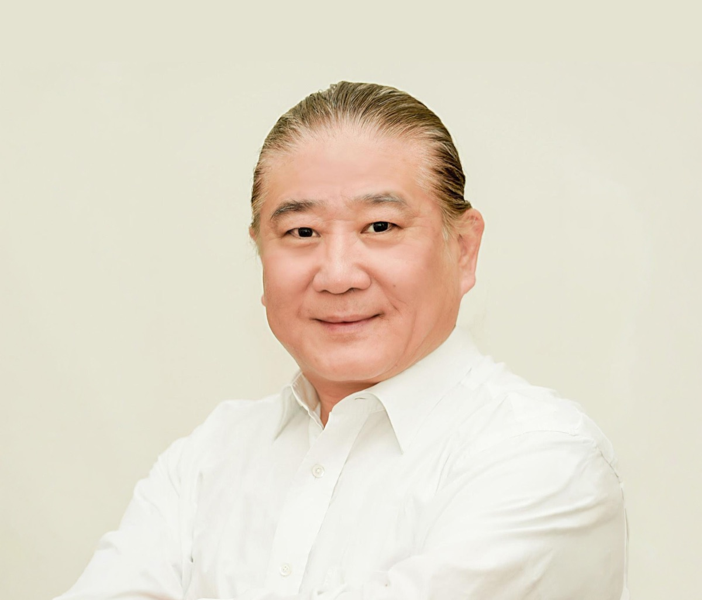
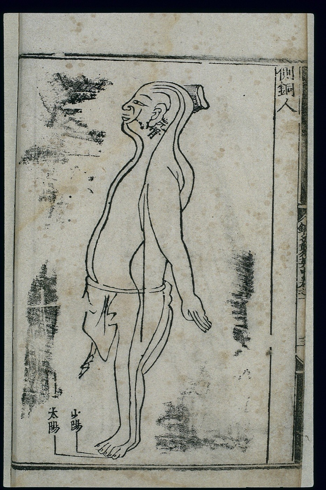
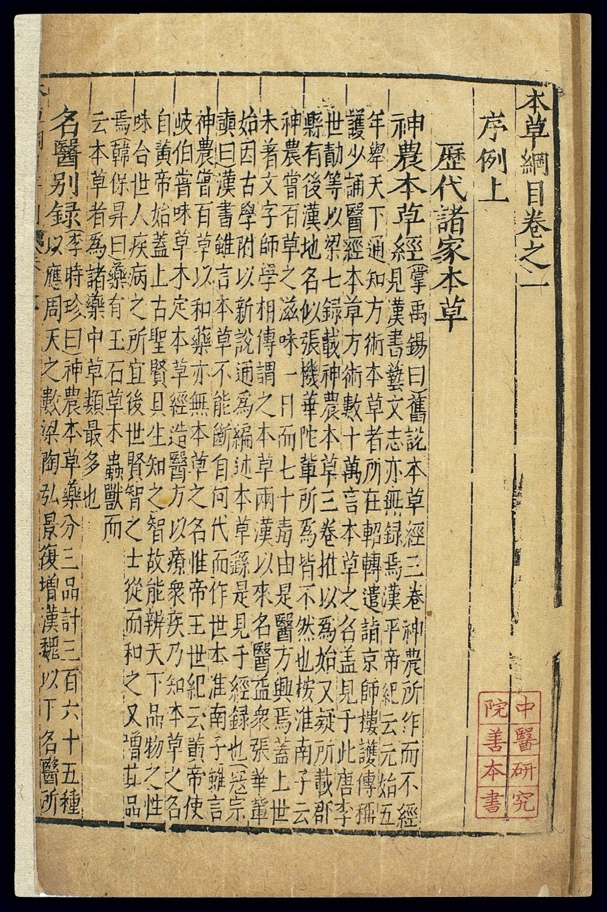
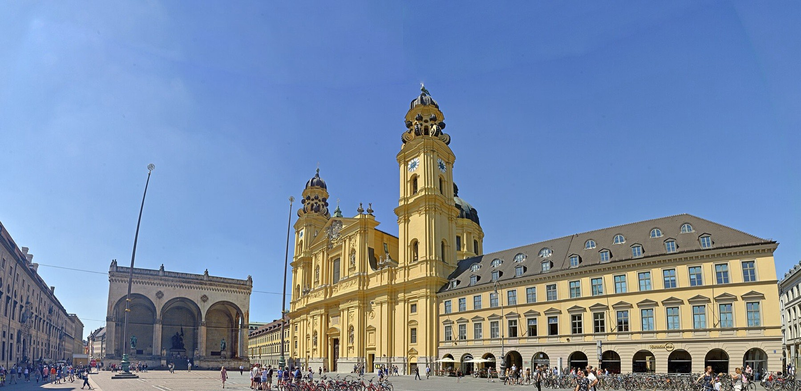
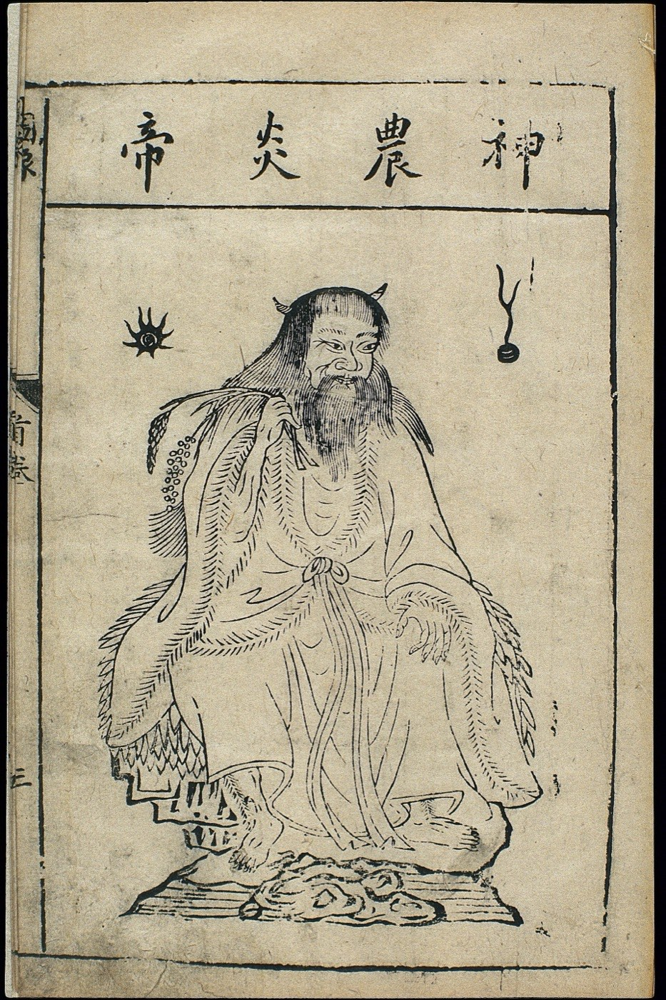

TCM Zentrum am Odeonsplatz
Akupunktur und chinesische Kräuter bei Zhongwen Zhang, Tuina-Massage bei Frau Li, in der Ludwigstraße 11 in München.
Termin vereinbaren中医 zhōngyī heißt Chinesische Medizin.
Seit 1990 praktiziert Zhongwen Zhang   
Zhongwen Zhang,
Heilpraktiker
Ausbildung
- Studium der Traditionellen Chinesischen Medizin in Chengdu, VR China
- Promotion in Akupunktur und Tuina bei Prof. Luo Yungfen
- Heilpraktiker in Deutschland
Zwei Kulturen
Studiert hat Zhongwen Zhang in Chengdu, seit 1988 lebt er in Deutschland. Diese Erfahrung in beiden Kulturen prägt seine Arbeit: Er verbindet die medizinische und die philosophische Seite der TCM mit dem Alltag in Europa.
Privatleistung, Abrechnung nach der Gebührenordnung für Heilpraktiker (GebüH). Mehr zu Kosten und Erstattung auf der Seite TCM-Therapie.
Zhongwen Zhang leitet das TCM Zentrum München und das TCM Kolleg.
Was wir anbieten
Zungen- und Pulsdiagnose
Der Ausgangspunkt jeder Behandlung in der TCM. Danach entsteht Ihr individueller Therapieplan.
Akupunktur
Feine Nadeln an ausgewählten Punkten der Meridiane. Die Akupunktur einer Körperseite dauert etwa 25 Minuten, eine Ganzkörperakupunktur von vorne und hinten etwa 55 Minuten.
Chinesische Kräuter
Eine Rezeptur aus 10 bis 20 Heilkräutern, als Tee zubereitet und im Verlauf der Therapie angepasst.
Tuina-Massage
Chinesische Massage bei Frau Li, 30 bis 90 Minuten, auch online buchbar. Zur Tuina-Massage
Moxibustion
Erwärmung von Akupunkturpunkten mit getrocknetem Beifußkraut. In China gehören Nadel und Moxa als „Zhenjiu“ zusammen.
Schröpfen
Schröpfgläser mit Unterdruck auf der Haut, eine überlieferte Methode der TCM.
Ernährungsberatung
Empfehlungen zur Ernährung nach den Regeln der TCM, abgestimmt auf Ihre Diagnose.
Qigong
Ruhige Bewegungs- und Atemübungen in Einzelstunden, die Sie zu Hause allein weiterführen können.
So beginnt Ihre Therapie
Diagnose
Sie vereinbaren telefonisch einen ersten Termin. Zhongwen Zhang fragt nach Ihren Beschwerden, sieht sich Ihre Zunge an und tastet den Puls.
Therapieplan
Danach erstellt Zhongwen Zhang Ihren individuellen Therapieplan.
Behandlung
Intensive Behandlungen umfassen meist 12 Akupunkturtermine über 4 bis 6 Wochen, oft zusammen mit Heilkräutern. Den genauen Verlauf bestimmt Ihre Diagnose.
Ernährung
Parallel dazu erhalten Sie eine Ernährungsberatung nach den Regeln der TCM.

Der Odeonsplatz mit Feldherrnhalle und Theatinerkirche. Das Zentrum liegt ein paar Schritte weiter in der Ludwigstraße 11.
Zwei Standorte
Am Odeonsplatz in München
U-Bahn U3, U4, U5, U6Haltestelle Odeonsplatz. Auf der linken Straßenseite Richtung Siegestor, je nach Ausgang 80 bis 180 Meter.
Bus 100, MuseumslinieHaltestelle Von-der-Tann-Straße. In Richtung Odeonsplatz hält der Bus direkt am Eingang.
Tram 19Haltestelle Theatinerstraße, dann etwa 500 Meter zu Fuß über Theatinerstraße und Odeonsplatz Richtung Siegestor, linke Straßenseite.
Termine für die TCM-Therapie telefonisch unter 089 28 80 72 80.
In Berg am Starnberger See
S-Bahn S6 bis StarnbergVon dort etwa 15 Minuten mit dem Taxi oder mit dem Bus X970 Richtung Bad Tölz bis Haltestelle Berg, Grafstraße.
S-Bahn S6 bis Starnberg NordWeiter mit dem Bus 971 Richtung Münsing bis Haltestelle Berg, Grafstraße.
S-Bahn S7 bis WolfratshausenWeiter mit dem Bus X970 Richtung Starnberg bis Haltestelle Berg, Grafstraße.
Termine in Berg vereinbaren Sie ebenfalls unter 089 28 80 72 80. Tuina-Massagen gibt es nur am Odeonsplatz.

Erst einmal anrufen
Am Telefon besprechen wir Ihr Anliegen und vereinbaren den Termin zur Zungen- und Pulsdiagnose, in München oder in Berg.
089 28 80 72 80Die Methoden der Traditionellen Chinesischen Medizin sind schulmedizinisch nicht anerkannt, ihre Wirkung ist wissenschaftlich nicht belegt. Sie ersetzen keine ärztliche Untersuchung oder Behandlung. Bei akuten oder ernsthaften Beschwerden wenden Sie sich bitte zuerst an Ihre Ärztin oder Ihren Arzt.